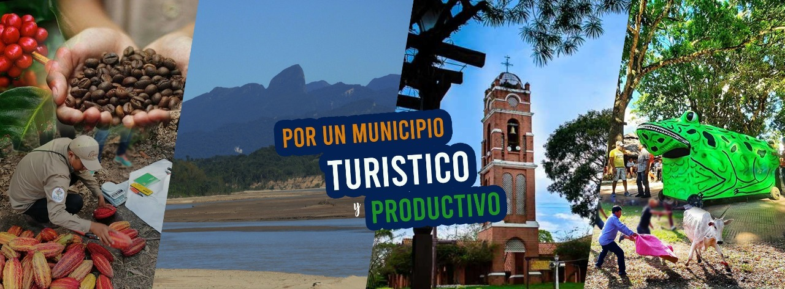

Objetivos Institucionales

Objetivos del Gobierno Autónomo Municipal de Buena Vista
El Gobierno Autónomo Municipal de Buena Vista define y establece los objetivos para garantizar una gestión eficiente y sostenible, alineada con la mejora continua y el desarrollo integral del municipio. Todos los esfuerzos estarán orientados hacia el logro de estos objetivos:
- Gestionar y administrar recursos físicos y financieros adecuados para la prestación eficiente de servicios, con especial énfasis en educación, salud y agricultura.
- Fomentar la capacitación y el desarrollo del personal municipal, asegurando que sean competentes para desempeñar sus funciones en sectores clave como salud, educación y agricultura.
- Impulsar una cultura de trabajo en equipo y mejora continua en la administración pública, garantizando el bienestar de la comunidad.
- Promover el desarrollo integral del municipio, incluyendo proyectos de infraestructura, programas sociales y actividades que fortalezcan la convivencia ciudadana.
- Atender las necesidades de la población, garantizando el cumplimiento de las leyes y la Constitución, con un enfoque prioritario en educación, salud y agricultura.
Funciones del Gobierno Autónomo Municipal de Buena Vista
Las funciones del Gobierno Autónomo Municipal de Buena Vista se definen para asegurar una gestión eficiente y orientada al desarrollo del municipio:
- Administrar los asuntos municipales y garantizar la prestación de servicios públicos esenciales en salud, educación y agricultura.
- Ordenar el desarrollo del territorio municipal, planificando y ejecutando obras de infraestructura necesarias para el progreso de Buena Vista.
- Fomentar la participación comunitaria y el mejoramiento social y cultural, con énfasis en la mejora de la educación, salud y el desarrollo agrícola.
- Planificar el desarrollo económico, social y ambiental, coordinando esfuerzos con otras entidades y promoviendo políticas sostenibles en salud, educación y agricultura.
- Solucionar las necesidades básicas insatisfechas de la población, garantizando el acceso a salud, educación y apoyo al sector agrícola.
- Preservar y manejar adecuadamente los recursos naturales y el medio ambiente, fomentando prácticas agrícolas sostenibles y la educación ambiental.
- Fomentar el desarrollo económico y social, incentivando la agricultura, el emprendimiento local y el turismo sostenible.